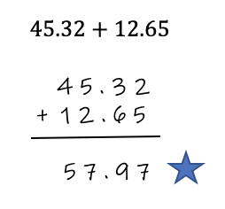
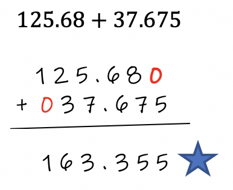
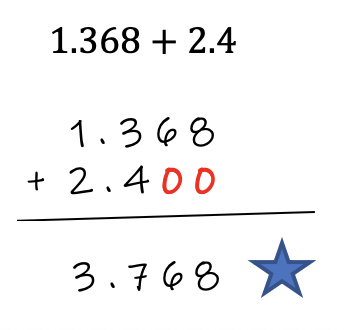
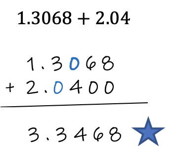
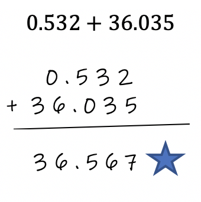
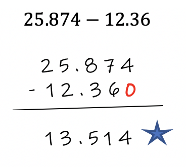
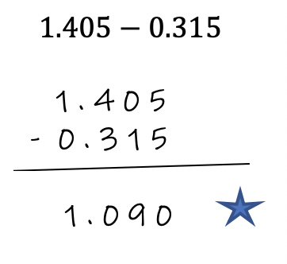
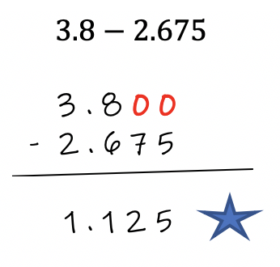

Rule:
To add or subtract two decimal values, write the problem vertically, and line-up the decimals, the ones place, tens place, etc. until add columns are distinctively written.
Then add or subtract as if the decimal isn't there. This will lead to the final answer. Don't forget to use borrowing on the subtraction problems if necessary.
Let's look at an example:

As you can see, even though the problem is written horizontally, it has been re-witten vertically so you can align each pair of corresponding columns. Then add as if the decimal isn't there.
Example 2:

Anytime you have an empty place in your problem, you can insert zeros in the columns so that all your values are still in their correct corresponding positions.
Example 3:

You can add zeros at the end of a number or the beginning of a number, but at no time can you add zeros between two numbers of your problem. You cannot discard a zero if it is a part of the number as well. For example:

The blue zeros are between other numbers in the problem. You cannot remove these zeros. They must remain as part of the problem.
Example 4:

Try this one on your own then check your answer.
54.326 + 4.0364
To subtract two decimals, use the same procedures as adding. Just remember to use borrowing when the top number is smaller than the bottom number.
Example 1: 
Example 2: 
Example 3: 
Try this one on your own then check your answer.
125.321 - 115.538